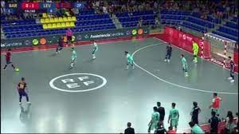

Fútbol Sala
La creación de este deporte nos remonta a 1930 en Montevideo, año de la primera Copa del Mundo de 1930 organizada y ganada por Uruguay. Los jóvenes se sentían eufóricos por practicar el fútbol sin tener en cuenta el tamaño o el tipo de superficie. Eran pocas las canchas para practicarlo y permanecían llenas, obligando a niños y jóvenes a jugar en las calles y en terrenos más pequeños. Fue el profesor Juan Carlos Ceriani, de la Asociación Cristiana de Jóvenes (YMCA) de Montevideo, quien llevó su práctica a escenarios cerrados. Se le ocurrió adaptar las normas del fútbol, combinándolas con reglas de otros deportes como el balonmano, Waterpolo y el baloncesto, a un campo pequeño y duro. Del baloncesto tomó el número de jugadores, cinco por cada equipo, y el tiempo total de juego de 40 minutos; del balonmano el tamaño de las porterías, el balón de escaso rebote y las medidas del campo; y del Waterpolo las reglas referentes al arquero.

Inicialmente se le llamó «fútbol de sala» y causó sensación en Uruguay, pasando posteriormente al resto de Sudamérica y extendiéndose por todos los continentes. Organización En 1965, se creó la Confederación Sudamericana de Fútbol de Salón, primera organización internacional de este deporte. En ese año también se disputó el primer campeonato sudamericano de selecciones. En 1971 se fundó la Federación Internacional de Fútbol de Salón (FIFUSA) en São Paulo. Esta organización realizó en 1982 el primer mundial del deporte.56 y posteriormente otros seis más. La FIFUSA se mantuvo como organización independiente hasta su disolución en el año 2002.5 A finales de 1985 y ante la crisis económica de la FIFUSA y sus afiliados, en parte por la presión ejercida por la entidad matriz del fútbol (FIFA), diversos países, encabezados por Brasil, decidieron solicitar al entonces Presidente de la FIFA Joao Havelange, así como a su Secretario General Joseph Blatter, que esta organización incorporase el fútbol sala a la organización de la FIFA.
Reglas La AMF y la FIFA tiene reglamentos diferentes, con aspectos compartidos. Aspectos compartidos Ambos equipos están integrados por cinco jugadores. Los jugadores no pueden tocar la pelota con la mano, con la excepción de los arqueros, dentro de sus correspondientes áreas. El objetivo del juego es realizar goles, introduciendo la pelota en el arco del equipo contrario. Cada gol vale un punto. Se juega en canchas de suelo rígido, más pequeñas que las del fútbol 11, variando su tamaño según la asociación. Los arcos son más pequeños que en el fútbol 11. La pelota es más pequeña y con menor circunferencia que las de fútbol 11, con diferencias de tamaño según la asociación. Se permiten cambios ilimitados. Se utiliza un régimen de faltas especial, que establece que a partir de la quinta falta de equipo, se deba patear un tiro libre sin barrera denominado «doble penal». Duración del partido El partido se realizará en dos tiempos de 20 minutos cada uno, separados por un descanso de menos de 15 minutos. El reloj se detiene cuando la pelota no está en juego. Diferencias según asociación Las reglas del futsal o fútbol sala difieren según se trate de la AMF o la FIFA.